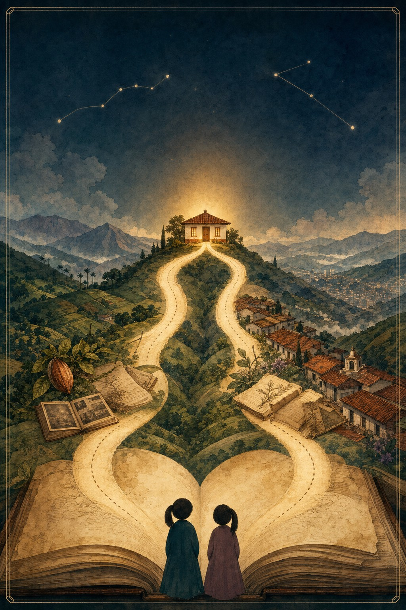
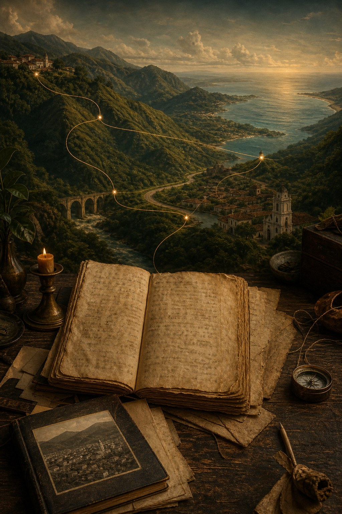
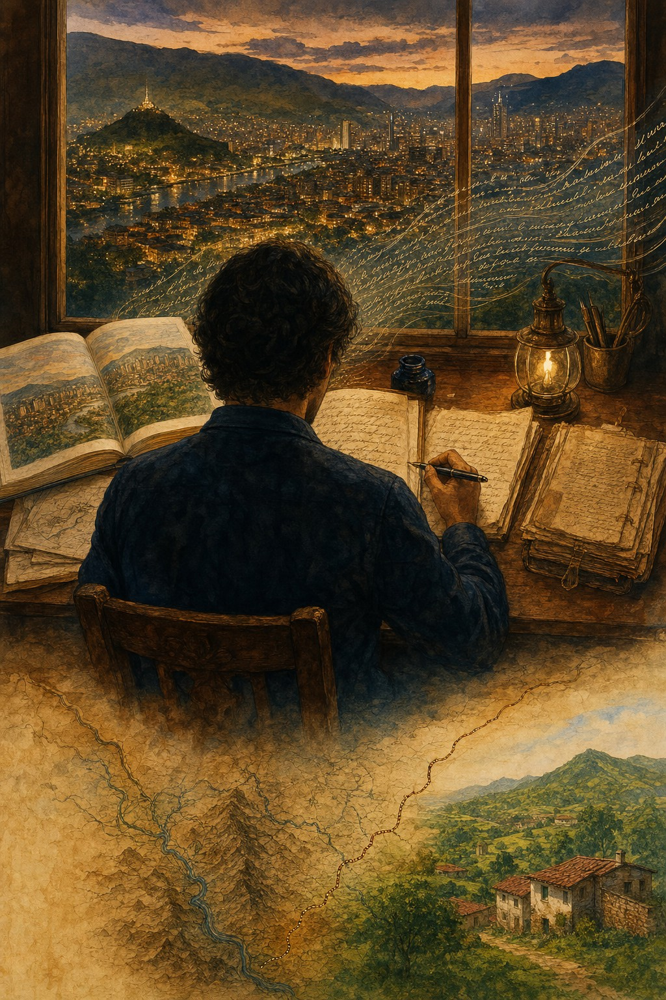

Dos caminos.
Una casa.
Una historia familiar que se puede leer, recorrer y seguir construyendo. Los documentos ponen los cimientos; las voces, los lugares y las imágenes devuelven la vida.
- Estado
- Archivo vivo
- Libro maestro
- 3 capítulos
- Actualización
- Continua
Primero los caminos. Después, los encuentros.
El árbol de Alejo y el árbol de Lau se estudian por separado. Cuando un documento demuestre una intersección, ese punto se convertirá en un momento especial con narración, grado de evidencia e imagen propia.
01
El asombro no necesita que inventemos.
Está en una partida de 1697 que vuelve a hablar en 1702; en un joven asturiano situado en Sevilla antes de pasar a Indias; en una ciudad convertida en libro; y en un “abuelo Eugenio” cuyo nombre completo reaparece más de un siglo después.
6 libros que crecen sin borrar sus fronteras
RAÍZ
Dos caminos, una casa
La historia entrelazada de Alejo y Laura, escrita para Martina, Guadalupe y quienes vengan después.
Abrir el libro
El camino de Alejo
Antes del encuentro
Arango, Gómez de Castro, Donmatías, Asturias y la ruta sefardí: cada frontera estudiada sin mezclarla con el árbol de Lau.
Abrir el libro
El camino de Lau
Todas sus ramas
Las ramas de César y María Lucía: Gómez–Ramírez, Gómez–Naranjo, Cornejo, Vargas–Umaña, Hernández y cada ruta profunda preservada.
Abrir el libro
La ciudad, la tinta y los Arango
Para José Samuel
Medellín, la escritura y una línea familiar que conduce desde Antioquia hasta la puerta asturiana.
Abrir el libro
La casa de Donmatías
Para Marta Lucía
Pacho Eladio, las mujeres de la familia y la memoria doméstica que no cabe completa en un acta.
Abrir el libro
Los nombres de Eugenio
Para César
Una caja de certificados abre caminos entre Bogotá, Bello y Marinilla.
Abrir el libroNada aquí queda congelado.
Nuevas fuentes pueden completar un nombre, corregir una fecha o cerrar un puente. El sitio se reconstruye desde los manuscritos para incorporar los cambios sin perder la historia editorial.